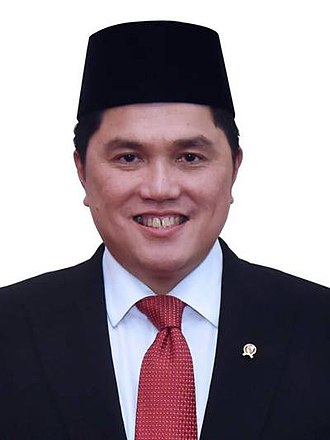

ERICK THOHIR EFFECT
Erick Thohir merupakan seorang tokoh figur bagi rakyat Indonesia atas dampaknya kepada negeri ini. Beliau adalaha seorang pengusaha, Mantan pemilik klub Inter Milan, Politikus, dan Pemimpin Bisnis Media. Beliau lahir pada 30 Mei 1970, Jakarta. Beliau Di bidang pendidikan Ia meraih gelar sarjana dalam bidang ekonomi dari Eastern Illinois University di Amerika Serikat dan gelar master dalam bidang bisnis dari National University di Amerika Serikat.
Saat ini juga sebagai Ketua Umum PSSI. Saat menjadi Ketum PSSI beliau mengubah dunia sepak bola di indonesia menjadi lebih berkembang daripada sebelumnya. Pada tahun 2013 beliau menjadi president klub Inter Milan, Italia. Tak banyak orang mengira bahwa ada orang Indonesia yang menjadi bagian di klub besar eropa. Saat menjadi president klub Inter Milan, beliau berhasil mengembalikan ekonomi di klub tersebut dari keadaan yang sangat kritis .dan pesaing utama dalam kompetisi Serie A Italia dan berhasil memenangkan beberapa gelar domestik. Dengan pengalaman sebesar itu, masyarakat Indonesia khususnya fans sepakbola menginginkan beliau untuk menjadi Ketua Umum di Federasi Sepakbola.
Di sektor media, Erick Thohir memiliki saham dalam beberapa perusahaan media terkemuka di Indonesia. Ia telah berinvestasi dalam stasiun televisi dan radio serta memiliki keterlibatan dalam bisnis media yang beragam. Dalam hal ini, Thohir telah mempengaruhi dunia media Indonesia dan berkontribusi pada perkembangan industri tersebut.
Erick Thohir memulai perjalanannya di dunia bisnis dengan latar belakang pendidikan yang kuat. Ia meraih gelar sarjana dalam bidang ekonomi dari Eastern Illinois University di Amerika Serikat dan melanjutkan pendidikannya dengan meraih gelar master dalam bidang bisnis dari National University di Amerika Serikat. Pendidikan yang solid ini membekali Thohir dengan pengetahuan dan keterampilan yang diperlukan untuk memasuki dunia bisnis.
Salah satu pencapaian utama Erick Thohir adalah pendirian Mahaka Group, sebuah perusahaan yang beroperasi di berbagai sektor, termasuk media, olahraga, hiburan, dan teknologi. Mahaka Group telah menjadi salah satu perusahaan terkemuka di Indonesia, dan Thohir memainkan peran kunci dalam memimpin perusahaan ini ke puncak kesuksesannya.
Selain karier bisnisnya, Erick Thohir juga terlibat dalam politik. Ia pernah menjabat sebagai Menteri Badan Usaha Milik Negara (BUMN) dalam pemerintahan Indonesia. Selama masa jabatannya, ia terlibat dalam reformasi dan pengembangan perusahaan-perusahaan milik negara. Thohir adalah anggota Partai Demokrasi Indonesia - Perjuangan (PDIP) dan memiliki pengaruh politik yang signifikan di Indonesia.
Informasi ini dapat kita ambil dari sudut pandang dunia IT, Yaitu: - Berkaryalah sesuai bidangnya dan buat karya itu sebanyak mungkin
Tentang Penulis. Nama saya adalah Ahmad Danesh Sudiono, asal Tangerang Selatan, Banten. Saat ini saya masih belajar di PPQ IT Al-Mahir
sumber: wikipedia